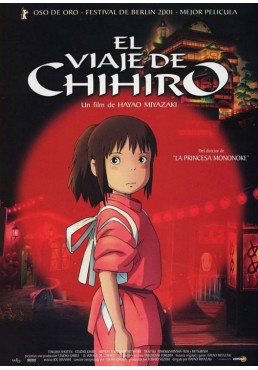
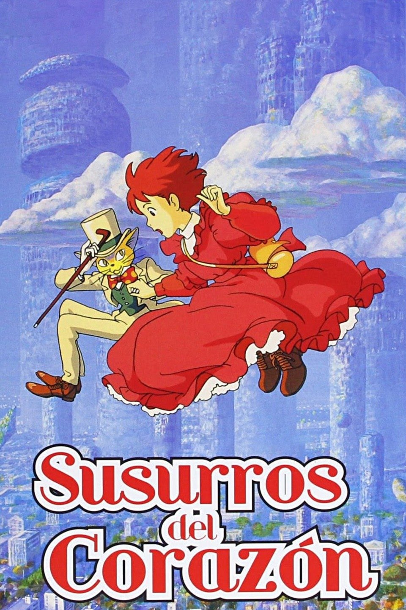
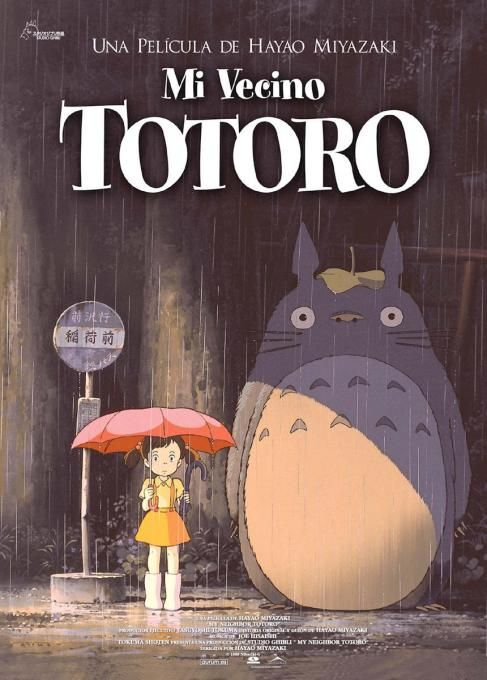
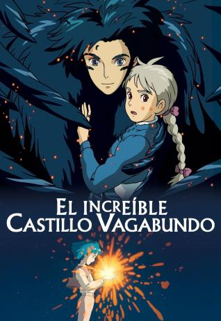
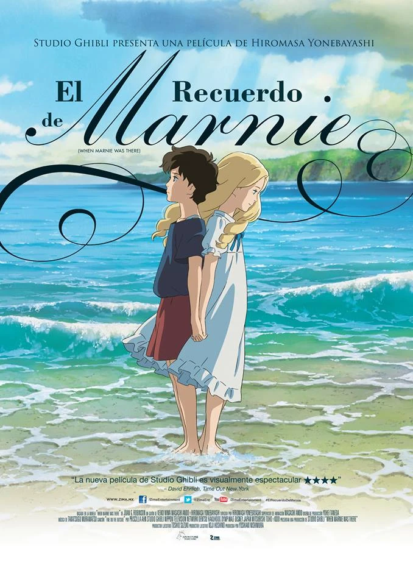
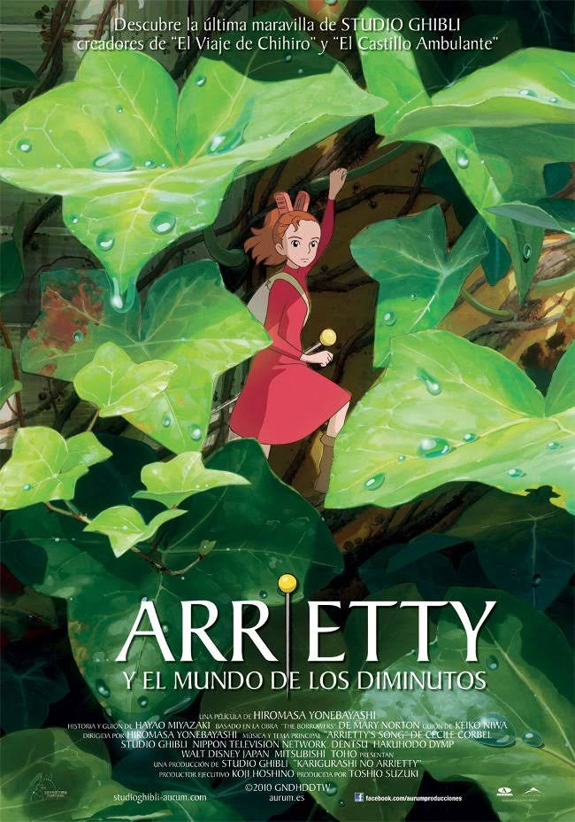
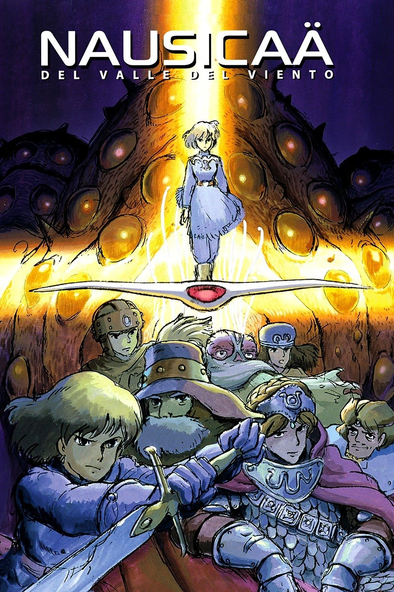
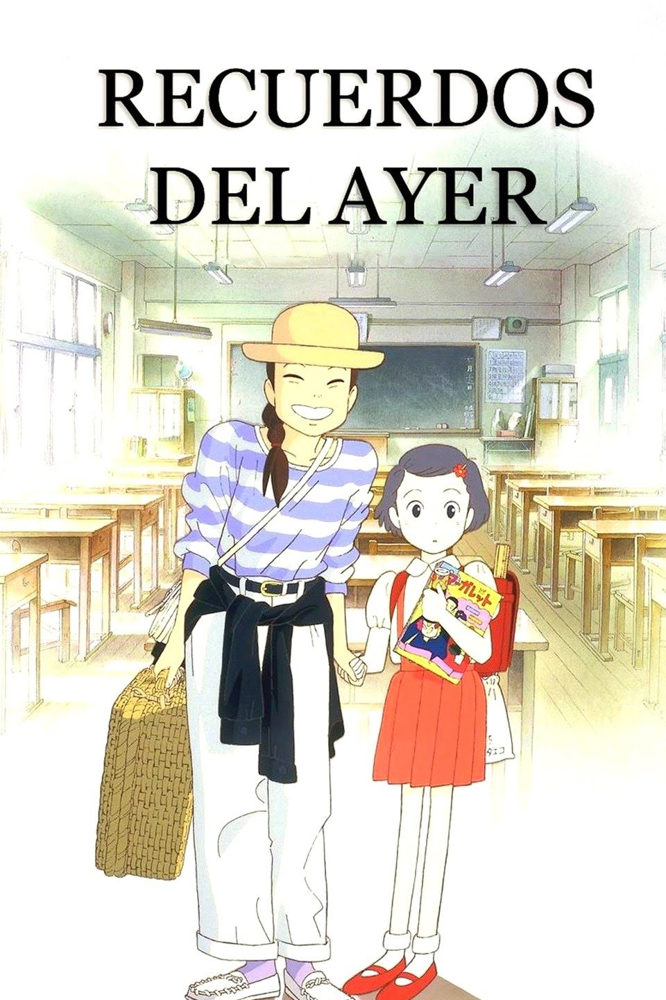
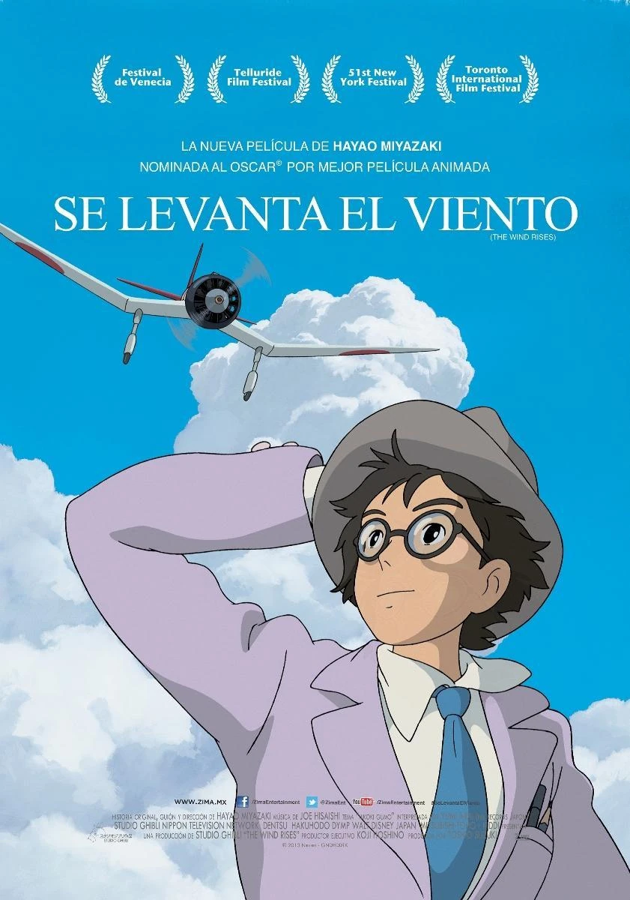
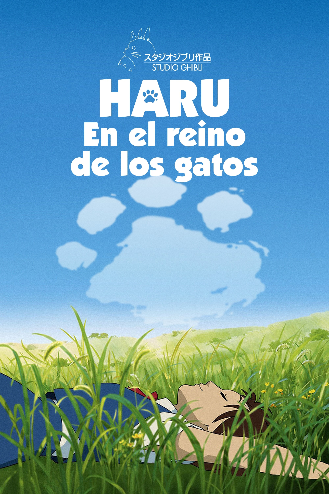

STUDIO GHIBLI!-
subtitulo subtitulo subtitulo subtitulo holalalallala CHAU










Studio Ghibli tambien cuenta con un parque tematico,
"Ghibli Park", el cual presenta atracciones basadas en
varias de las películas producidas por el estudio.
Se encuentra en Nagakute, Aichi, Japón.
Leer mas